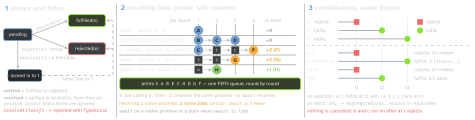

javascript · folio
In one line: A promise is a settle-once result: its executor runs now, its
handlers always later, each as a promise job (a
microtask
on the web). then returns a new promise that adopts whatever its handler
returns; async/await runs on the same jobs. The work starts when it is called
and a promise cannot be cancelled — an AbortSignal asks the work to stop.
Download PDF Print view LaTeX source


Why a promise behaves as it does
- Always async, on purpose. The executor runs synchronously, but
thennever calls back synchronously — even on a settled promise the handler waits for a job. An API that is sometimes sync and sometimes async is impossible to reason about: the 2013 “do not release Zalgo” rule.Promise.try(f)(ES2025) closes the gap: a sync throw infbecomes a rejection. - In
p.then(f, r),rdoes not see a throw fromf; acatch(r)after it does. A non-function handler lets the value pass;finally(f)callsfwith no argument and passes the value on, unlessfthrows. - Duck typing is history. Promise libraries predate ES2015, so a promise adopts any thenable (a callable
then), which is read now, called a job later (tin drawing 2). Soawait { then(r) { r(42) } }is42; a module exportingthenhijacksawait import(); withObject.prototype.thenset,async () => ({})never settles. - A promise never holds a promise:
thenmaps and flattens. A 2013 Promises/A+ request for a monadicthenwas turned down as “typed-language fantasy land”.Promise.resolve(p)returns a nativepitself, asawaitdoes since ES2019.
Drawing 2 in code, and its history
const log = (s) => console.log(s), p = Promise.resolve();
(async () => { await p; log('A'); })();
p.then(() => log('B')).then(() => log('C')).then(() => log('D'));
p.then(() => { log('E'); return p; }).then(() => log('F'));
(async () => { return p; })().then(() => log('G'));
(async () => { return await p; })().then(() => log('H'));
log('S'); // S A B E C H D G FUntil ES2019 await wrapped every operand in a new promise; tc39/ecma262 #1250 made it call PromiseResolve (above). On by default from V8 7.2.
async functions
- Run synchronously up to the first
await; the code after it runs in a later job, when state may have changed.return/ a throw settle the returned promise. return await pbeatsreturn ptwice. In atry,return pleaves beforeprejects:catchnever sees it. And V8’s async stack traces followawaitonly: afterreturn awaitthe caller stays inerror.stack(at async outer); afterreturn por athenchain it is gone.
Rejections nobody handles
- The engine only reports:
HostPromiseRejectionTracker(p, "reject")with no handler,"handle"once one comes. “Too late” is the host’s call. - Browser: after a microtask checkpoint →
unhandledrejection(cancelable:preventDefault()keeps it off the console); a later handler →rejectionhandled. - Node only warned until v15; since then
--unhandled-rejectionsdefaults tothrow: your'unhandledRejection'listener, else an uncaught exception.
Combinators are logic
The combinators (drawing 3): all = AND of fulfilments, any = OR, race = first to settle, allSettled = wait for all. Empty input gives the identities: all([]) fulfils with [] at once (AND of nothing is true), any([]) rejects at once with an empty AggregateError (OR of nothing is false), race([]) never settles (no runner, no winner).
Traps
pa = getA(); pb = getB(); await pa; await pb— ifpbrejects whileawait pawaits, it has no handler yet: unhandled (Node: uncaught). UsePromise.all.new Promise(async (resolve) => …): a throw inside rejects only the executor’s own, unhandled promise; the outer one stays pending.
Concurrency shapes
const a = await getA(); const b = await getB(); // tA + tB
const [a, b] = await Promise.all([getA(), getB()]); // max(tA, tB)
items.forEach(async (x) => { await save(x); }); // NOT awaited
for (const x of items) await save(x); // one at a time
await Promise.all(items.map((x) => save(x))); // all at once
async function pool(items, n, work) { // at most n
const out = []; let next = 0;
const lane = async () => { while (next < items.length) {
const i = next++; out[i] = await work(items[i]); } };
await Promise.all(Array.from({ length: n }, lane));
return out; } // next++ is safe: no job runs between read and write
const { promise, resolve, reject } = Promise.withResolvers();
ws.addEventListener('open', resolve, { once: true });
ws.addEventListener('error', reject, { once: true });
await promise; // an event as a promiseOne failing lane rejects pool at once, yet the other lanes keep pulling items — give work a signal and abort it in catch.
Cancel with AbortSignal
The language has no cancel (TC39 withdrew cancelable promises on 2016-12-15), so Promise.race([work, timeout]) stops only the waiting. The DOM’s AbortSignal is a flag the work must choose to check.
const ac = new AbortController();
const signal = AbortSignal.any([ac.signal, AbortSignal.timeout(5000)]);
const res = await fetch(url, { signal }); // rejects with signal.reason
const sleep = (ms, signal) => new Promise((resolve, reject) => {
signal?.throwIfAborted(); // a throw here = rejection
const stop = () => { clearTimeout(t); reject(signal.reason); };
const t = setTimeout(() => {
signal?.removeEventListener('abort', stop); resolve(); }, ms);
signal?.addEventListener('abort', stop, { once: true });
});abort(reason)runs the abort algorithms and theabortevent before it returns. The reason travels —AbortErrorby default,TimeoutErrorfromtimeout()— so acatchtells “too slow” from “cancelled”;any()keeps the reason of the signal that fired, and cannot unsubscribe from its inputs: remove your listeners. Node ships thesleepabove innode:timers/promises.
Retry with full jitter
async function retry(fn, { tries = 5, base = 100, cap = 10_000, signal } = {}) {
for (let i = 0; ; i++) {
try { return await fn(signal); } catch (e) {
if (i + 1 >= tries || signal?.aborted) throw e;
await sleep(Math.random() * Math.min(cap, base * 2 ** i), signal); } } }Why random: clients that failed together retry together, and plain exponential backoff keeps them in step — bursts and idle gaps. Full jitter, random(0, min(cap, base·2attempt)), spreads them to a near-constant rate: in a 2015 AWS simulation with 100 contending clients it more than halved the calls of un-jittered backoff. Retry only idempotent requests; honour Retry-After on 429 / 503.
Async iteration and disposal
async function* pages(url, signal) { // Symbol.asyncIterator
while (url) {
const page = await (await fetch(url, { signal })).json();
yield* page.items; url = page.next; } }
for await (const it of pages('/feed')) if (it.last) break; // -> return()
const all = await Array.fromAsync(pages('/feed')); // ES2026, one by onebreak/throwinfor awaitcallsreturn(): the generator’sfinallyruns. Calls tonext()queue — one at a time. In an async generatoryield vawaitsvfirst.for await (x of [p1, p2])also works, one at a time — ap2that rejects whilep1is awaited has no handler yet (the first trap).await using r = …(finished, ES2027): at block exit, also on throw,r[Symbol.asyncDispose]()(elseSymbol.dispose) is awaited, in reverse order; errors combine intoSuppressedError.AsyncDisposableStackholds many.
Further reading
- Faster async functions and promises (V8, 2018) — the job counts behind drawing 2, and how Node 8’s out-of-spec
awaitorder became ES2019’s rule - Designing APIs for Asynchrony (2013) — the “Zalgo” essay: why an API must be always sync or always async, the rule
thenobeys - Promises/A+ issue 94: Incorporate monads and category theory (2013) — the argument over whether
thenshould flatten, and why it does - Promises/A+ — the short community spec that defined thenables before ES2015; its notes explain why any object with a
thenis adopted - tc39/proposal-cancelable-promises — the cancel-token design (
Promise.withCancelToken) withdrawn in 2016: the road the language did not take - Exponential Backoff And Jitter (AWS, 2015) — the simulation and its graphs: the bursts plain backoff leaves, and the flat rate jitter makes